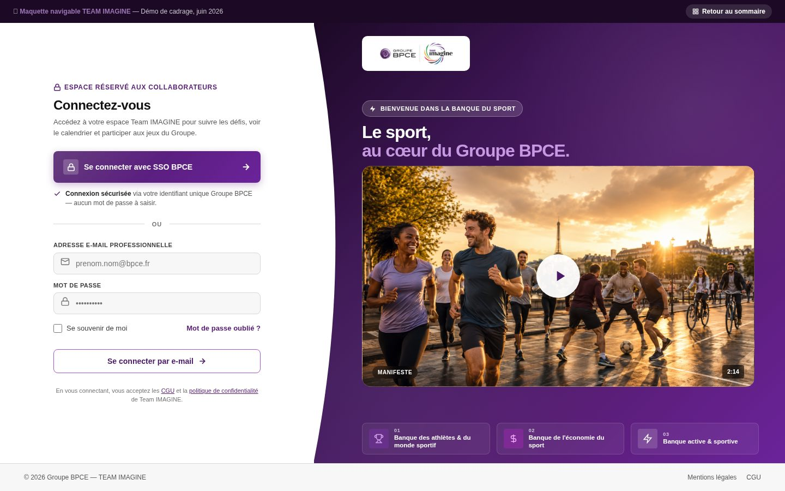
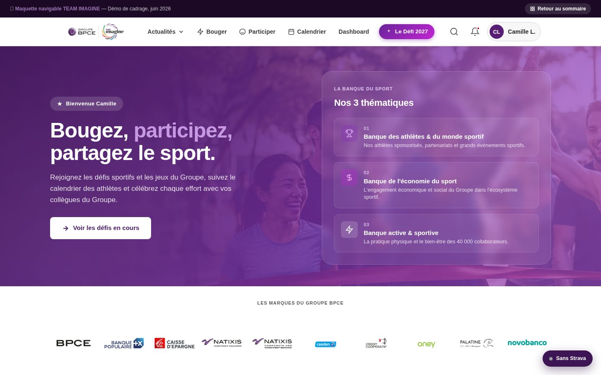
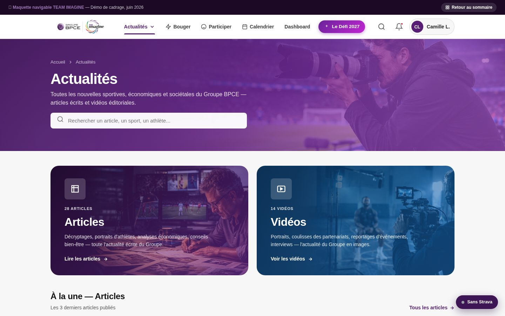
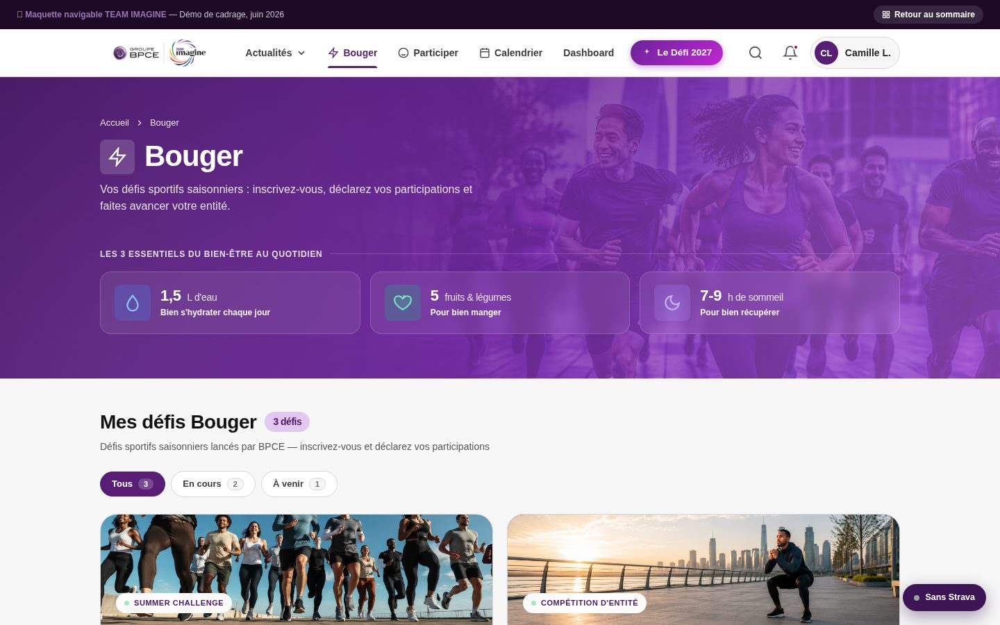
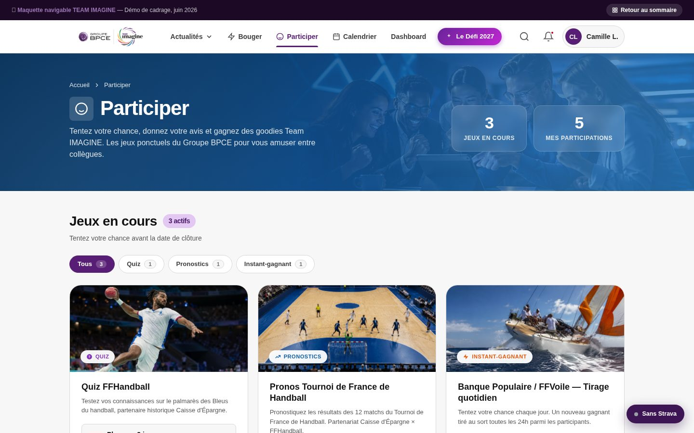
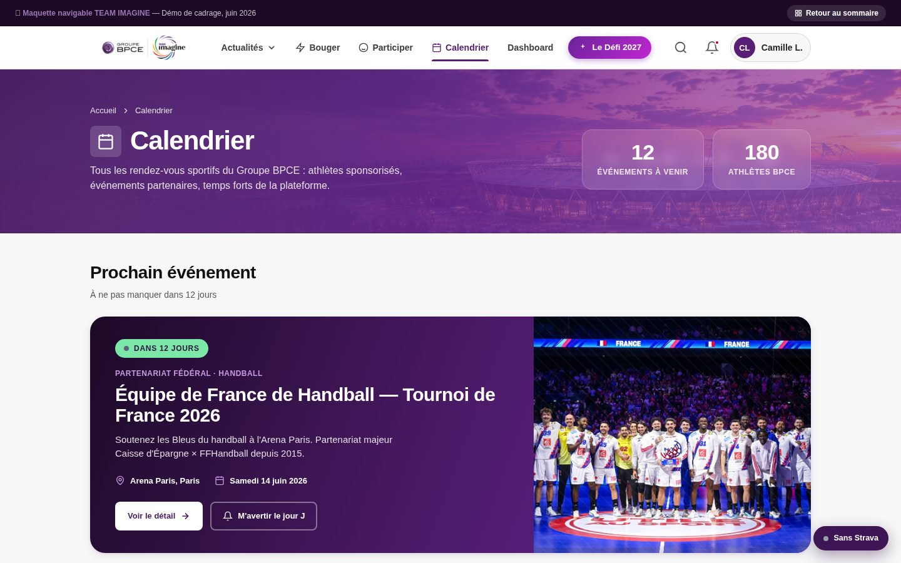
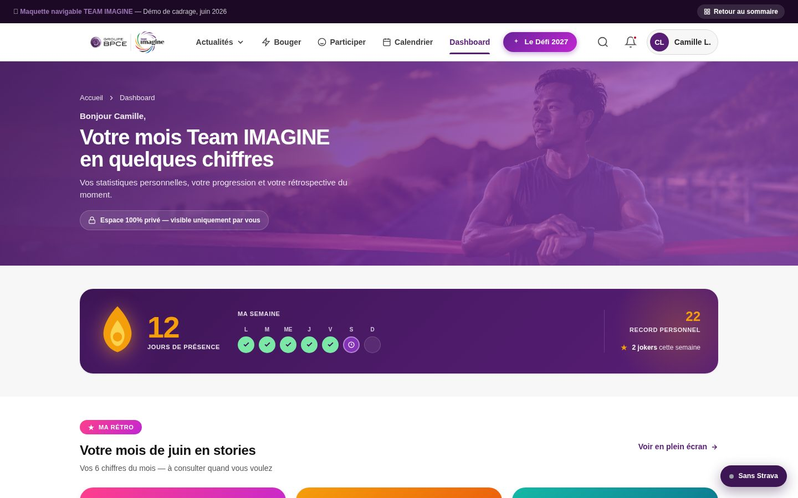

SOMMAIRE · VERSION SANS STRAVA
Team IMAGINE — Version Sans Strava
Aucune connexion Strava ni donnée d'activité automatique. Plateforme recentrée sur la participation et l'éditorial. Cliquez sur une page pour l'explorer.
Aucune connexion Strava ni donnée d'activité automatique. Plateforme recentrée sur la participation et l'éditorial. Cliquez sur une page pour l'explorer.
Version sans Strava — défis au kilomètre, suivi d'activité et Mouv'Studio retirés

Public1Page d'accueil avant connexion. SSO BPCE prioritaire, formulaire mail/mdp secondaire, 3 piliers Banque du Sport.

Connecté2Hub central post-connexion. Héros sur les 3 thèmes Banque du Sport, sans activité Strava ni défis au km, sans Mouv'Studio.

Éditorial3Hub éditorial Banque du Sport. Filtres par thématique, article à la une, grille d'articles et de vidéos (hors Mouv'Studio).

Sport4Défis sportifs saisonniers : Summer Challenge et Winter Challenge, participation déclarative, sans Strava ni km automatiques.

Engagement5Mécaniques ponctuelles 100 % BPCE. Quiz, pronos, instant-gagnant, mes participations, derniers gagnants.

Agenda6Agenda sport unifié. Timeline chronologique, événements à venir, athlètes et partenariats BPCE en avant.

Personnel7Bilan personnel recentré sur l'engagement : rétro en données blog (articles lus, vidéos, jeux), badges de participation.